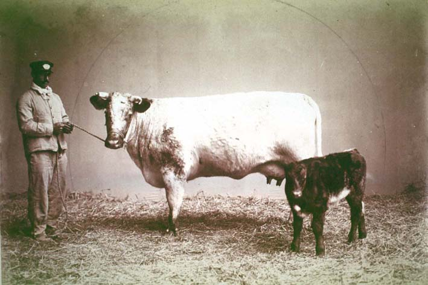

|
|  |
|
Exposición Nacional de Ganadería y Agricultura, 1890
|
Upper-class Argentines, from 1875 onward, would gather every year at the pavilions of the Sociedad Rural in the fashionable northern district of Palermo, Buenos Aires, to perform a ritual of cultural inversion. Like the slaughterhouses of the southern suburbs, depicted in Esteban Echeverría´s homonymous short story from 1839 as theatres of barbarism, the yearly exhibitions of cattle and agriculture brought the countryside into the space of the city. But on display was not a backward and potentially threatening rural world, but the wealth it generated for an urban latifundist oligarchy: the Palermo pavilion, in the urban space of the capital, marked the end of a monumental circuit dedicated to elite leisure and cosmopolitan references, while the south (in many ways the 'real' space of passage into working-class and rural worlds) was being colonised by monuments dedicated to national history in its liberal, patrician version.
|